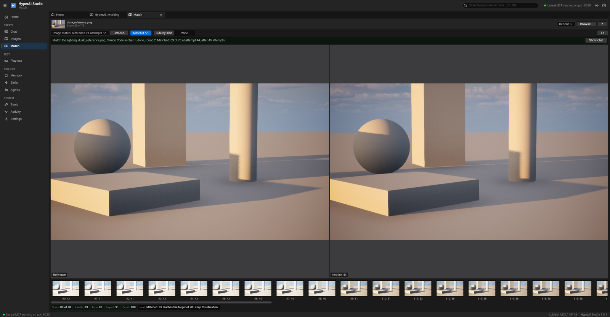
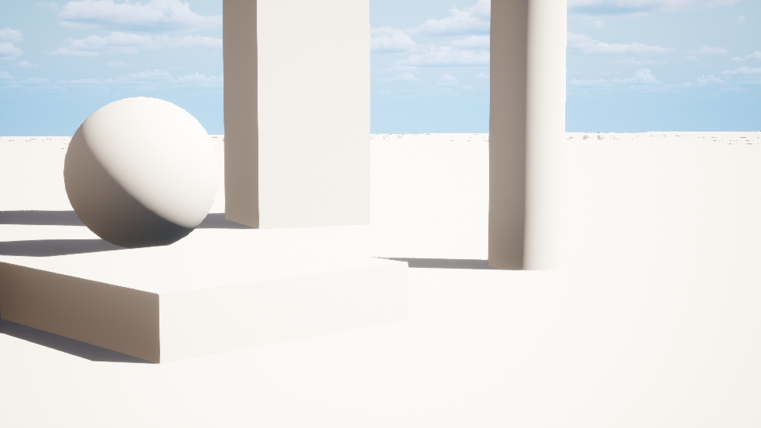
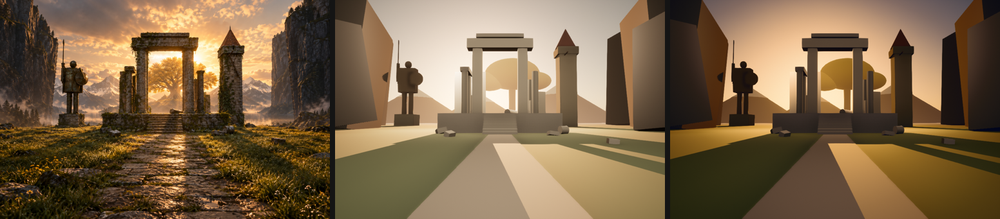
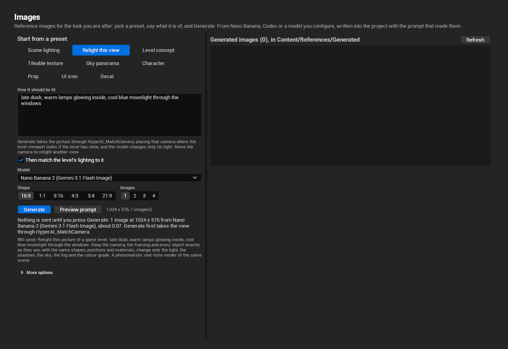

The Match page.
The Match page compares what the editor makes with a reference image, side by side or with a wipe. Pick a reference with Browse… or Recent, and a source:
- Image match: a match session's attempts, one thumbnail per iteration along the bottom, each with its score. Click one to compare it; the reference stays on the left.
- Lighting: the level viewport measured against the reference, with the differences in exposure, contrast, colour temperature and saturation, and suggested changes.
Under the pictures: the score and its parts (Palette, Tone, Layout, Detail) and Next, what to change next. Drag to pan, wheel to zoom, double-click or Fit to fit both images.

Match it: the agent does the work.
Match it hands the reference to your preferred agent as a job. Choose what the job is:
Match the lighting
The agent relights the level until it matches: exposure first, then the sun or sky, the point, spot and rect lights, fog, sky light and post process, one change at a time, each attempt captured and scored. Target: 78.
Build the level to match
The agent works as a level designer: a camera framed like the reference, a blockout by shapes, then materials, then lighting. Target: 72, since a blockout matches less closely than light.
The job opens a chat for it on its route's agent (Lighting or Level Design) or your preferred one, sends the task with the reference attached, and follows it. A banner on the Match page says who has it, the round and the best score, with Show chat and Stop. Its edits for its own packs are approved as they come, so it can work while you do something else; everything stays undoable.
From anywhere else: Images › Match the lighting to this or Build the level like this on a generated picture, or the console, HyperAIStudio.Match lighting|level <reference image>. No reference at all? Relight this view…, beside Browse…, makes one from the level itself (section 13). In Claude Code, the workflow /hyperai-match <reference> <what to match> runs the same loop with a planner and a judge.

How a job decides.
After every turn of the agent, HyperAI reads the match session itself and decides:
| It sees | It does |
|---|---|
| The best attempt reached the target | Stops: "Matched: 89 of 78 at attempt 44, after 45 attempts." |
| Progress, but not there | Sends the agent back with the best score, the regions that differ most, the compare's top suggestions, and what raised and what lowered the score so far. |
| A round that gained under a point | Asks the agent to switch to another kind of lever. A second flat round stops the job at its best. |
| A round with no attempt | Reminds the agent how to capture and compare; a second empty round stops the job. |
| Six follow-up rounds used | Stops at its best and says what still differs. |


The pictures above are from HyperAI's own proof run on Ultra Dynamic Sky: the level started at the sky's defaults and reached 89 of 78 in two rounds, 45 attempts, with HyperAI sending the agent back once.
Each job teaches the next.
When a job ends, however it ends, HyperAI writes a study of it to .hyperai/memory/studies/<date>-<goal>-<reference>-<time>.md, shared through Git with the rest of the project’s memory. It holds the best score against the target, what raised the score and what lowered it, each from an attempt’s note and score, where the best attempt still differed, and what the compare suggested next.
The next Match job’s prompt carries the studies that bear on it: this level’s for the same goal first, then this level’s for the other goal, then other levels’. Within a job, each round’s message lists what raised and what lowered its own score, so the agent builds on one and does not repeat the other. A study learns from the agent’s notes, so the image-match skill asks for notes with values: Roughness 0.85 → 0.2 on M_Floor, not tweaks.
Building a level to match.
- Frame it.A camera,
HyperAI_MatchCamera, placed and aimed so its view frames the level the way the reference frames its scene. - Block it out.Shapes at the right scale for a 180 cm character: ground, walls, landmarks, paths. The project's own meshes first.
- Dress it.Materials that give the reference's palette.
- Light it.Last, as in Match the lighting. Once the framing matches, the compare switches to aligned mode so structure counts too.
Ultra Dynamic Sky, and friends.
Ultra Dynamic Sky is Blueprint only: it owns its sun, sky light, fog and atmosphere and redraws them from its own variables. HyperAI's lighting pack reads and writes those variables the way the Details panel does, so its construction script runs and every change is undoable. It knows Ultra Dynamic Sky and Ultra Dynamic Weather, Sun Sky and the Sky Sphere.
| Ultra Dynamic Sky variable | What it moves |
|---|---|
Time of Day (0–2400) | Where the sun and moon are, and with them most of the look. |
Cloud Coverage · Fog · Dust Amount | How much sun gets through, haze and depth. |
Sun Light Intensity · Sun Light Color · Moon Light Intensity · Sky Light Intensity · Night Brightness | The lights it owns. |
Overall Intensity · Saturation · Contrast | The whole picture. |
Sun Yaw · Sun Pitch | Where the sun's path sits in the sky. |
Apply Exposure Settings · Exposure Bias Day / Dawn / Dusk / Night / Cloudy | The sky's own exposure. Locking exposure turns it off. |
Ultra Dynamic Weather: Rain · Snow · Wind Intensity · Thunder/Lightning · Material Wetness | Weather, when the level has it. |
The op is set_sky_system, with the variable named as the Details panel shows it. While such a sky owns the lights, edits to the stock sun, sky light, fog and atmosphere are refused with the variable to use instead, so no second sun appears.
Ultra Dynamic Sky's lights are not in physical units, so it sits far below real sunlight's EV100 15, often between -3 and 3. Lock the exposure, capture, and move the EV100 until the frame's luminanceP50 is near 0.18. A black or white capture means the exposure is wrong, not the light.
Point, spot and rect lights.
Interiors, night scenes and anything lit from inside the frame run on local lights, and the lighting pack reads and changes them as it does the sun. hyper_lighting_inspect lists them after the sun and sky, those lighting the match camera’s view first, each saying whether it is in view and how far away it is. A level with hundreds lists 32 by default; a label filter, or up to 128, shows others. A light inside a Blueprint, such as a torch or a street lamp, lists under the actor with its component’s name.
| Op | What it does |
|---|---|
set_light | Changes one light by its label: intensity, and its units (it stays as bright), colour, temperature, attenuation radius, source size, spot cones, rect size and barn doors, shadows, volumetric and indirect strength, IES profile, light function, location, rotation, and aim_at a point. |
add_light | Places a new point, spot or rect light at a location, movable and marked as added by HyperAI: a key through a window, a fill, a rim, a lamp. |
set_fog volumetric_fog | Volumetric fog, so spot and window lights throw shafts; each light’s volumetric_scattering sets how strongly. |
Nothing is deleted: enabled false switches a light off, and undo takes an added one away. Local lights belong to the level, not the sky, so they change beside Ultra Dynamic Sky too.
Light it with every tool.
A real frame is never one light. When the score stalls on the sun, what is missing is usually elsewhere: the atmosphere, the fill in the shadows, or the grade. The Match job asks the agent to light as a lighting artist does, with these:
| What the reference shows | Ops |
|---|---|
| Finished assets where the level has blockout shapes, such as leaves letting light through where a solid sphere blocks it | set_actor_shadow false on the stand-in, so it stops casting a shadow; the light is left alone. |
| A glow around a low sun | set_sky_atmosphere MieAnisotropy and mie_scale |
| Haze the sun lights, low mist | set_fog DirectionalInscatteringExponent and DirectionalInscatteringLuminance; SecondFogData for a second, lower fog |
| God rays and shafts | Volumetric fog with the sun’s VolumetricScatteringIntensity; set_sun light_shaft_bloom with BloomScale and BloomThreshold |
| Clouds | set_clouds adds volumetric clouds; material:Cloud_GlobalCoverage and material:Cloud_GlobalDensity set their material on an instance the level owns, under /Game/HyperAI/Clouds, saved with the plan |
| Shadows darker than the reference | Several at once: the sun’s source_angle and ShadowAmount, the sky light’s MinOcclusion and OcclusionTint, IndirectLightingIntensity, a fill that casts no shadow, LocalExposureShadowContrastScale below 1 and a lower AmbientOcclusionIntensity |
Any setting, by name. Beside their fixed keys, set_sun, set_sky_light, set_fog, set_sky_atmosphere, set_clouds and set_post_process take any setting their Details panel shows, by its name or its label there, however it is spaced. A post-process setting set to default goes back to the level’s. hyper_lighting_inspect lists what differs from the defaults, and exposure stays with lock_exposure.
Surfaces and reflections.
Light only shows where it lands. When the light is right and the frame still looks wrong, such as a dull floor where the reference’s is wet, chalky walls, or a window that does not glow, the surface is wrong. The lighting pack tunes surfaces without touching the project’s materials:
| Op or report | What it does |
|---|---|
hyper_lighting_inspect materials | The materials on what the match camera sees, most of the frame first, each with its parameters and their values, how many actors show it, and notes on what keeps it from taking light as the real surface would: unlit, a roughness above Lumen’s trace limit, a dull specular, a half-metal, a base colour brighter than snow or darker than charcoal. |
hyper_lighting_inspect rendering | How the project carries light: its GI and reflection method, software or hardware tracing, Lumen’s roughness limit, distance fields, Substrate, MegaLights, baked lighting and the level’s reflection captures. |
set_material_parameter | A number, colour or texture parameter, set on the level’s own instance of the material under /Game/HyperAI/LookDev/<level>. Every slot in the level that showed the material shows the instance, so modular pieces stay alike; the material asset and other levels are untouched. default drops a change. |
set_actor_material_parameter | The same, on one actor’s slot alone. |
set_actor_lighting | A mesh’s lighting flags: emissive_light_source, which keeps a small glowing mesh lighting its surroundings under Lumen, affect_indirect_lighting, affect_distance_field_lighting, visible_in_reflection_captures, visible_in_ray_tracing and cast_shadow. |
add_reflection_capture · set_reflection_capture | Sphere and box reflection captures, placed, sized and brightened, for projects whose reflections are not Lumen’s. |
Lumen’s own settings, such as LumenMaxRoughnessToTraceReflections, LumenReflectionQuality and LumenFrontLayerTranslucencyReflections, are post-process settings by name. The image-match skill carries a lighting and look-dev reference beside it, lighting-lookdev.md: physical material values from Epic’s guide, every Lumen setting with its default, and the mistakes that cost earlier matches.
Grade last, with a fitted LUT.
Much of a reference’s look is its colour grade, which no light reaches. hyper_image_compare with bFitLut fits a colour-grading LUT from the attempt to the reference and says what the attempt would score through it (lutScore), beside a side-by-side of the graded attempt. It fits two ways and keeps the one that scores higher: to the look, a tone curve for lightness and colour for each band of lightness, as a colourist matches a frame by eye; or pixel by pixel, for a view that lines up and differs in grade alone.
set_post_process color_grading_lut applies it. It is imported as a LUT texture under /Game/HyperAI/LUTs, saved with the plan and applied at full intensity; the fit allows for the level’s current LUT, so a new one replaces it. It also takes a LUT texture’s path, or none.

Captures and scores.
hyper_capture_viewdraws a camera, a transform or the viewport to PNGs underSaved/HyperAIStudio/Captures, with metrics (luminance percentiles, colour, contrast) and frame-to-frame differences. It draws for a display, as the viewport does, so shadows and mid-tones read as you see them. Nothing in the level moves.- It waits for the level to show your last change. Sky captures, global illumination and fog take many frames to catch up. After an edit it keeps drawing for at least 1.5 seconds and 45 frames, then until two draws match, 6 seconds at most; the report says how long it took (
settleFrames) and whether it ran out of time. hyper_image_comparescores an attempt against the reference, 0 to 100: look mode for concept art and photos (palette, tone, layout, detail), aligned mode when both frame the same view. It outlines the worst regions and suggests what to change; with bFitLut it also fits a LUT.- A session keeps up to 60 attempts together under
Saved/HyperAIStudio/Match/<id>, with each candidate and side-by-side, and calls a plateau after three iterations without a gain. - Screens too.
hyper_ui_render_reviewdraws a Widget Blueprint at full size (1920x1080, 2560x1440, 1280x720, at the project's UI scale), reviews its layout (clipped or small text, contrast, safe zone, overlapping buttons, focus and navigation) and, given a mock-up, scores the render against it in aligned mode with a heat map of where they differ, in the same sessions. The unreal-umg skill runs the polish loop: render, compare, fix, render again.
The Images page.
Make the reference first. Most images need three things: a preset, a line saying what it is of, and Generate.

- Pick a preset.Scene lighting, Relight this view (section 13), Level concept, Tileable texture, Sky panorama, Character, Prop, UI icon or Decal. Each adds the words its kind of image needs, what to keep out, a shape and a count; the prompt box says what to describe. Press it again to send the prompt as written.
- Say what it is of.As you would tell an artist: "a mountain monastery at dusk, low sun, thin fog."
- Model, shape, images.The model on its own row; the shape (16:9, 1:1, 9:16, 4:3, 3:4, 21:9, longest side 1024 so every model bills at 1K); 1 to 4 images.
- Preview, then Generate.Preview prompt is free: the exact prompt and the price. Generate spends; pressing it is the approval.
More options holds the rest: more things to keep out, a prompt template and its slots, width, height and seed, the batch name, and Save preset, which saves your settings as a preset for the team in .hyperai/image-presets.json. Pictures land in Content/References/Generated/<batch>, each with the prompt that made it. On a picture: Match the lighting to this, Build the level like this, Compare on Match, Reuse prompt, Copy path and Show in folder.
No reference? Relight this view.
With no picture of the look you want, make one from the level itself. Relight this view… on the Match page, beside Browse…, opens the Images page on the Relight this view preset, and so does the search box.

- Say how it should be lit.The time of day, where the light comes from, its colour, the weather and the mood: "late dusk, warm lamps glowing inside, cool blue moonlight through the windows." The preset adds the rest: keep the camera, the framing and every object, and change only the light, the shadows, the sky, the fog and the grade. On a blockout, its flat colours become the finished stone, wood or grass they stand for.
- Generate.HyperAI takes the view through
HyperAI_MatchCameraat the shape you picked and sends it to the model with your words. With no such camera in the level, it places one where the level viewport looks, as one undo step; move it to relight another view. The model must be one that can change a picture: a Nano Banana model or Codex. - Then match it.With Then match the level’s lighting to it ticked, the relit picture goes straight to your preferred agent as a Match the lighting job. The job knows the reference is the level’s own view, so it captures every attempt through that same camera and changes only the light. With more than one image, pick one and use Match the lighting to this.
The relit picture lands in Content/References/Generated/<batch> beside the view it was made from (<batch>_input.png) and that view’s camera (capture.json). Agents do the same with hyper_capture_view and hyper_image_generate’s input_image_path, and the console with HyperAIStudio.Relight <how it should be lit>, which spends as Generate does.
Image models and prices.
| Model | Id for agents | Per image | Needs |
|---|---|---|---|
| Nano Banana 2 | nano_banana_2 | $0.067 (1K) to $0.151 (4K) | GEMINI_API_KEY, billed by Google to that key |
| Nano Banana Pro | nano_banana_pro | $0.134 (1K) to $0.240 (4K) | |
| Nano Banana 2 Lite | nano_banana_2_lite | $0.0336 | |
| Nano Banana | nano_banana | $0.039 | |
| Codex | codex_image_gen | Your ChatGPT plan | The Codex CLI, signed in |
| Gemini CLI | gemini_image_gen | Your key's billing | Gemini CLI's nanobanana extension |
| Your own | Any id | As you set it | A service and model under Settings › Image services |
Prices are Google's, as the plugin shipped; each call counts against the session spend cap. Agents that cannot draw, such as Claude Code, ask hyper_image_generate to have Codex or Nano Banana draw into the project, then open the picture. All of these can change a picture as well as draw one; a model of your own can when it has an edit request template.